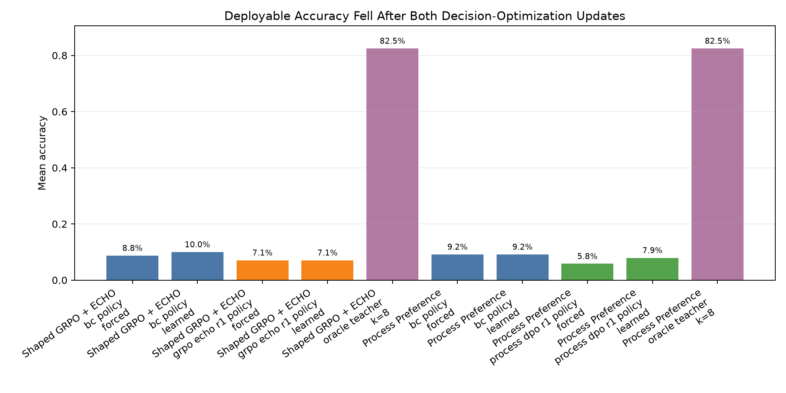
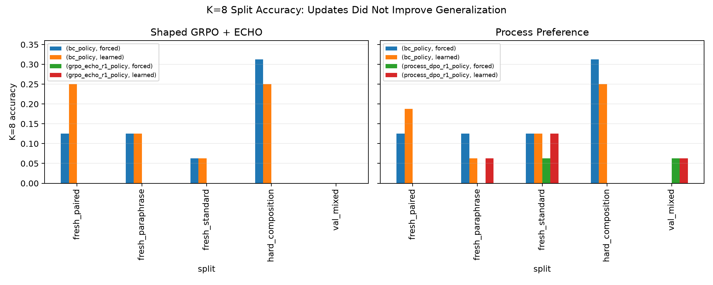
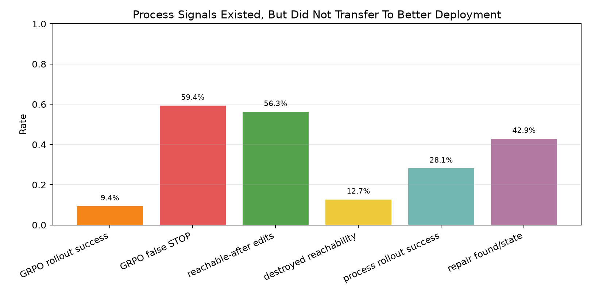
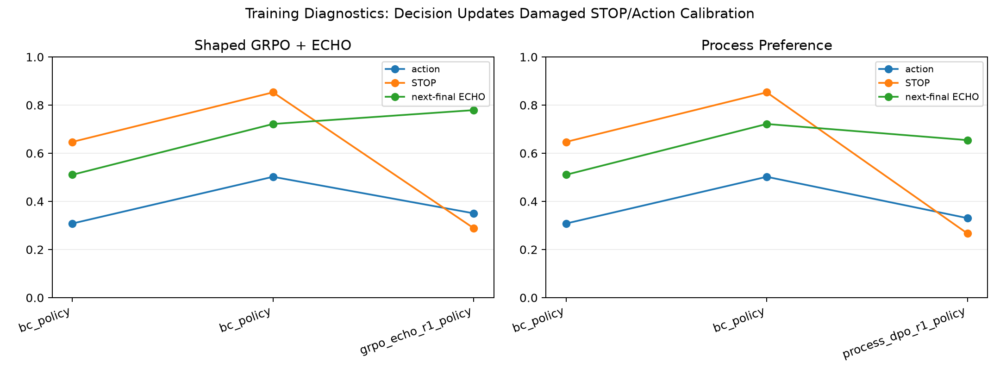

This standalone experiment tested a token-free dense-state VM controller: prompt embeddings plus dense VM-state embeddings in, structured action/value/ECHO heads out.
Result: the experiment did not pass the scale-up gate. Both decision-optimization arms produced process signal but reduced deployable accuracy after one update.
| arm | phase | mode | mean_accuracy | k8_accuracy | false_stop_rate | mean_steps |
|---|---|---|---|---|---|---|
| Shaped GRPO + ECHO | bc_policy | forced | 8.8% | 12.5% | 0.0% | 4.00 |
| Shaped GRPO + ECHO | bc_policy | learned | 10.0% | 13.8% | 8.3% | 3.53 |
| Shaped GRPO + ECHO | bc_policy | value_gated | 8.3% | 11.2% | 4.6% | 3.89 |
| Shaped GRPO + ECHO | grpo_echo_r1_policy | forced | 7.1% | 0.0% | 0.0% | 4.00 |
| Shaped GRPO + ECHO | grpo_echo_r1_policy | learned | 7.1% | 0.0% | 4.2% | 3.92 |
| Shaped GRPO + ECHO | grpo_echo_r1_policy | value_gated | 7.1% | 0.0% | 0.0% | 4.00 |
| Shaped GRPO + ECHO | oracle_teacher | k=8 | 82.5% | 82.5% | 0.0% | 5.19 |
| Process Preference | bc_policy | forced | 9.2% | 13.8% | 0.0% | 4.00 |
| Process Preference | bc_policy | learned | 9.2% | 12.5% | 7.1% | 3.60 |
| Process Preference | process_dpo_r1_policy | forced | 5.8% | 2.5% | 0.0% | 4.00 |
| Process Preference | process_dpo_r1_policy | learned | 7.9% | 5.0% | 14.2% | 3.33 |
| Process Preference | oracle_teacher | k=8 | 82.5% | 82.5% | 0.0% | 5.19 |


| arm | states | success/reachability | failure signal |
|---|---|---|---|
| Shaped GRPO + ECHO | 605 | 9.4% rollout success; 56.3% reachable-after | 59.4% false STOP; 12.7% destroyed reachability |
| Process Preference | 226 | 28.1% rollout success; 97/226 repair labels | 3.5% false-STOP states; 1098 candidates/state |

| arm | phase | action_acc | stop_acc | rank_acc | next_final | train_states |
|---|---|---|---|---|---|---|
| Shaped GRPO + ECHO | bc_policy | 30.8% | 64.7% | 0.0% | 51.1% | 237 |
| Shaped GRPO + ECHO | bc_policy | 50.2% | 85.3% | 0.0% | 72.2% | 237 |
| Shaped GRPO + ECHO | grpo_echo_r1_policy | 35.0% | 28.9% | 0.0% | 77.9% | 842 |
| Process Preference | bc_policy | 30.8% | 64.7% | 0.0% | 51.1% | 237 |
| Process Preference | bc_policy | 50.2% | 85.3% | 0.0% | 72.2% | 237 |
| Process Preference | process_dpo_r1_policy | 33.0% | 26.7% | 80.2% | 65.4% | 463 |

The dense-state whole-network loop is mechanically viable, but direct actor updates damaged action and STOP calibration. Shaped GRPO reduced false STOP while producing repeated invalid edits; process preference produced repair labels and strong ranking accuracy but still regressed deployment.
Do not scale this actor-update recipe. The next version should use Qwen as a value/prior model inside verified search, train process preferences as search heuristics, and keep ECHO as an ablation rather than a bundled claim.